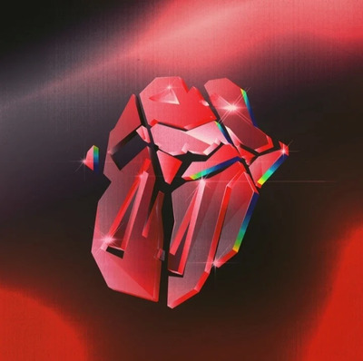
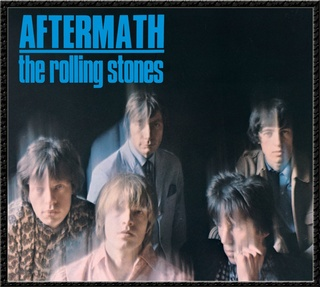
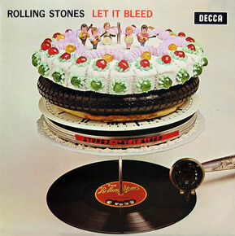
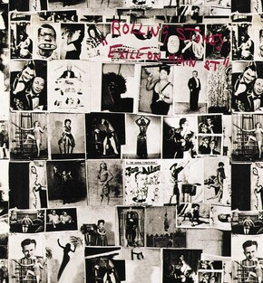

Nuevo album

Discografia por orden cronológico
aftermath

Si bien no es el primer album de la banda (oficialmente el 4to) es su segundo album con seriedad y un hitazo como lo es Paint it Black. Se destacan otros temazos como Under my Thumb o Stupid Girl. Cierra con la interminable Going Home, pero dentro de todo es un muy buen album, cuenta con versiones en UK y USA.
beggars banquet
let it bleed

Con una de las mejores tapas que vi, Let it Bleed cuenta con un repertorio casi perfecto, abriendo con capaz mi cancion favorita "Gimmie Shelter", un par de covers increibles y cerrando con la inmortal "You can't Allways Get What You Want" este disco se metio en la historia de la musica por siempre.
sticky fingers
Exiles on main treet

Este doble disco lleno de emociones y alabado por la critica como el mejor esfuerzo de la banda contiene todo tipo de joyas. Creado en un periodo de exilio de la banda en Francia debido a la persecución estatal por impuestos, de ahi el nombre, trajeron a la creacion varios temas iconicos, siendo el Disco 1 mi preferido. Disfruten.